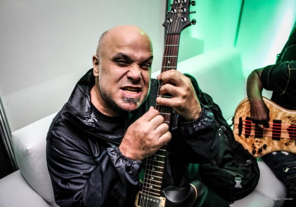

CONHEÇA A BANDA
HISTÓRIA
O Rappa foi uma banda brasileira formada no Rio de Janeiro no início da década de 1990. O grupo ficou conhecido por apresentar uma mistura de diferentes estilos musicais. Ao longo de sua trajetória, a banda combinou elementos de rock, reggae, rap, samba e música brasileira, criando uma identidade própria. As letras de O Rappa ficaram conhecidas por abordar temas relacionados à sociedade, desigualdade, violência, política e cotidiano. A banda conquistou grande espaço na música brasileira e deixou um importante legado cultural.
INTEGRANTES

Marcelo Falcão
Vocal

Marcelo Yuka
Bateria e composição

Xandão
Guitarra
Lauro Farias
Baixo
Marcelo Lobato
Teclados, percussão e bateria
MÚSICAS
Minha Alma (A Paz Que Eu Não Quero)
1999
Uma crítica direta à falsa paz e ao silenciamento social, defendendo que não existe paz verdadeira sem justiça e igualdade.
Ouvir no SpotifyAnjos (Pra Quem Tem Fé)
2013
Fala sobre a força da fé e a esperança para superar momentos difíceis.
Ouvir no SpotifyAuto-reverse
2013
Usa a metáfora do toca-fitas que inverte o lado da fita automaticamente para falar sobre recomeçar, resiliência e enxergar a vida por uma nova perspectiva.
Ouvir no Spotify